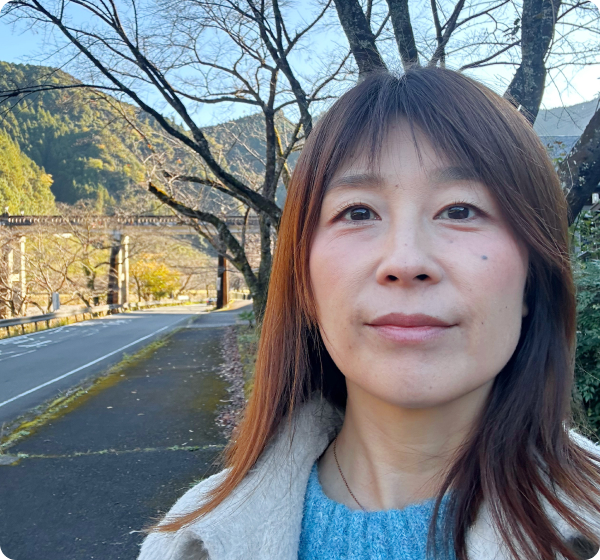
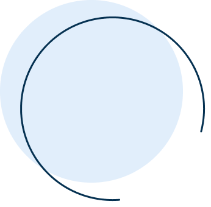
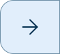

はるい ゆりこ / yuriko harui
はじめまして。
これまで人と関わる仕事やものづくりに携わってきました。
現在は社内外のさなざまな人と連携しながら、業務が円滑に進むようサポートする仕事を
しています。
また、会社の広報活動にも携わり、Instagramの運用や情報発信を行なってきました。
私は人の話を聞くことが好きです。相手の想いや考えに耳を傾け、整理しながら伝わり
やすい形にすることを大切にしています。
これまでの経験を通して、人とのつながりや、ものづくりの楽しさを学んできました。



sea
海を眺める
子供の頃は波が怖くて、海が苦手でした。でもいつからか海を
眺めていると心が落ち着き、今では何時間でも眺めていられます。
時間があると海へ出かけ、波の音を聞きながらゆっくり過ごして
います。
plant
植物を育てる
春はチューリップ。夏はひまわりやダリアにハーブも。
季節ごとにさまざまな花を育てるのが楽しみです。
朝起きると、まず植物の様子を見に行きます。新しい目や蕾など、
小さな変化を見つけるととても嬉しく、眠い朝も元気をもらえます。
jog
海を眺める
普段はデスクワークが中心なので、運動不足解消と健康のために
ランニングをしています。
走ることに集中していると、自然と頭の中が空っぽになり、
気持ちが落ち着いてきます。
走った後のすっきりした感覚が心地よく、心と体を整える大切な
時間になっています。
